Agràve Pro is a handwritten typeface for longer texts, with open counters, short ascenders and descenders, uniform strokes, and solid legibility. The family offers three weights and supports multiple languages, with ligatures, unique accented glyphs, small caps, and a full range of figure styles.
To contribute, see github.com/daanjobsis/agrave-pro.
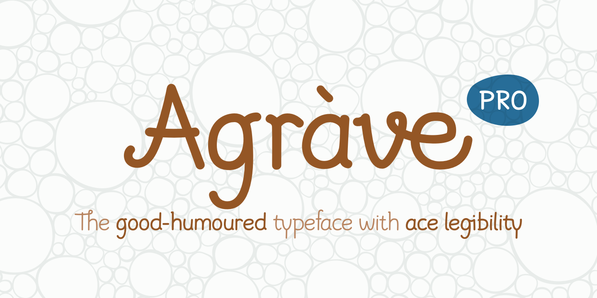
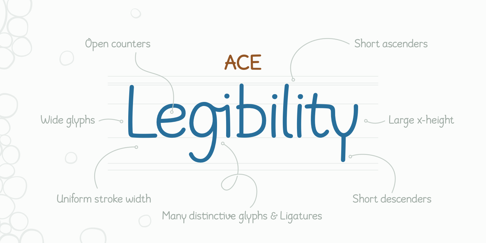
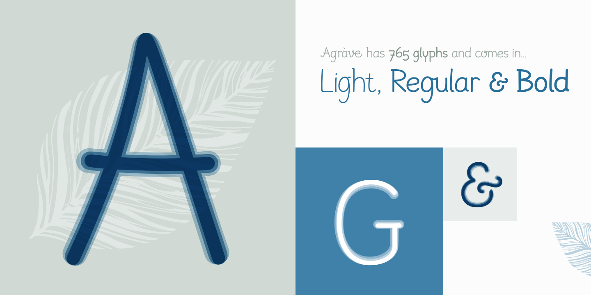
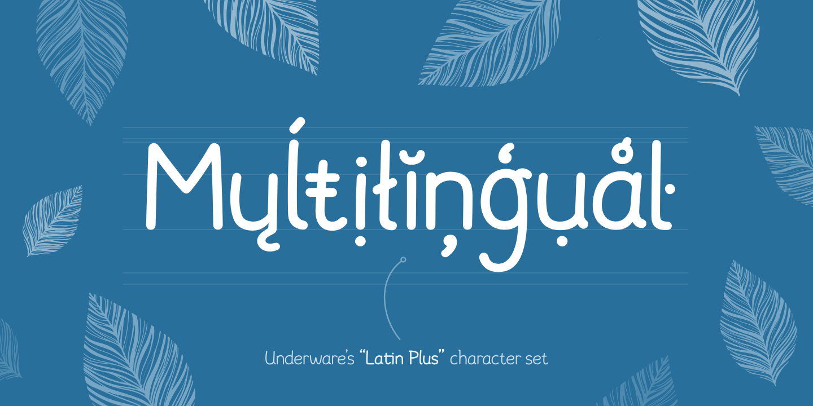
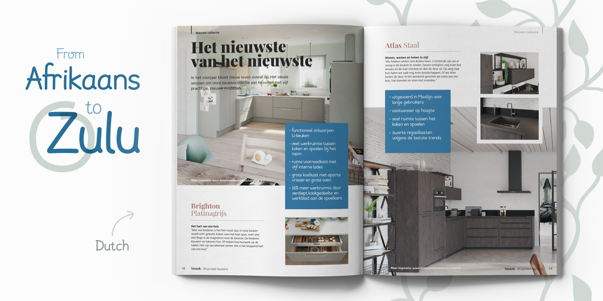
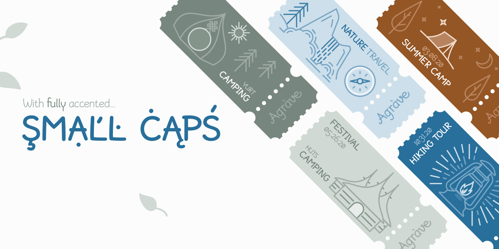
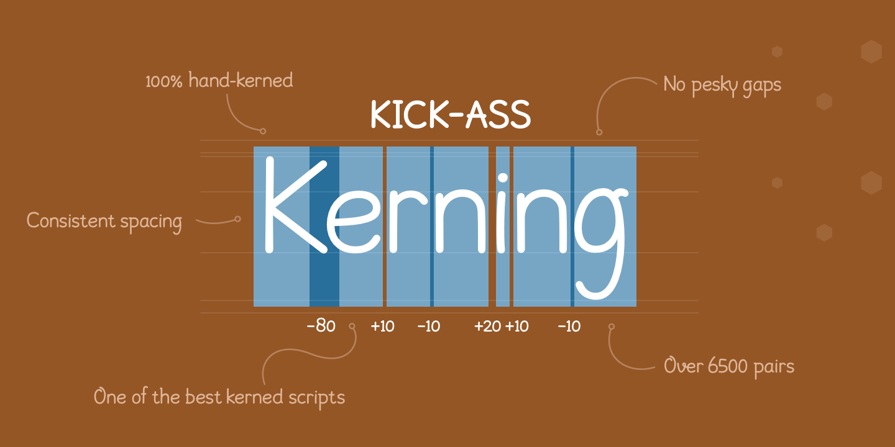
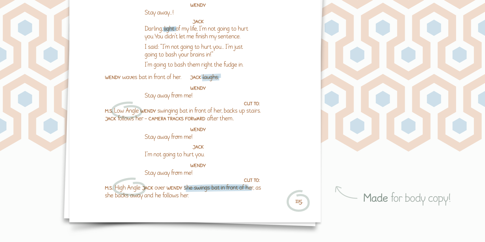
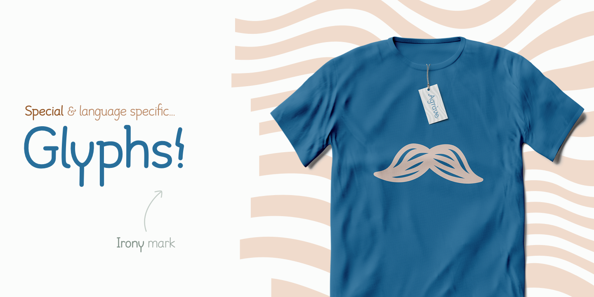
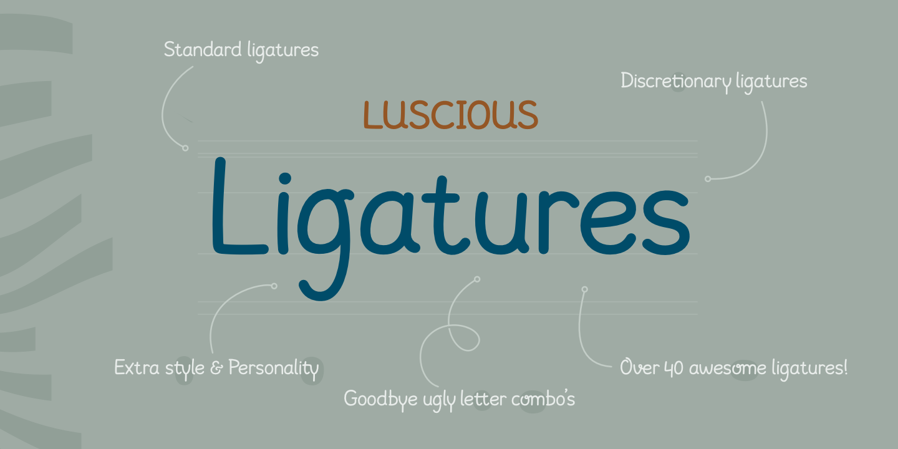
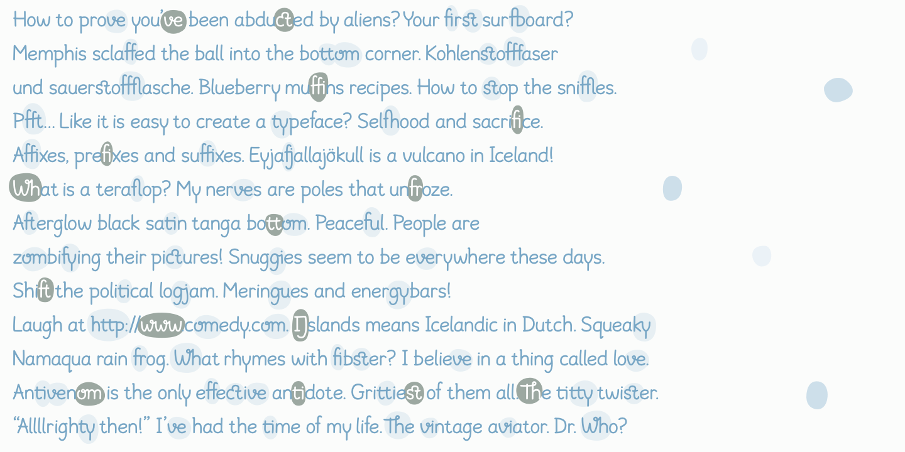
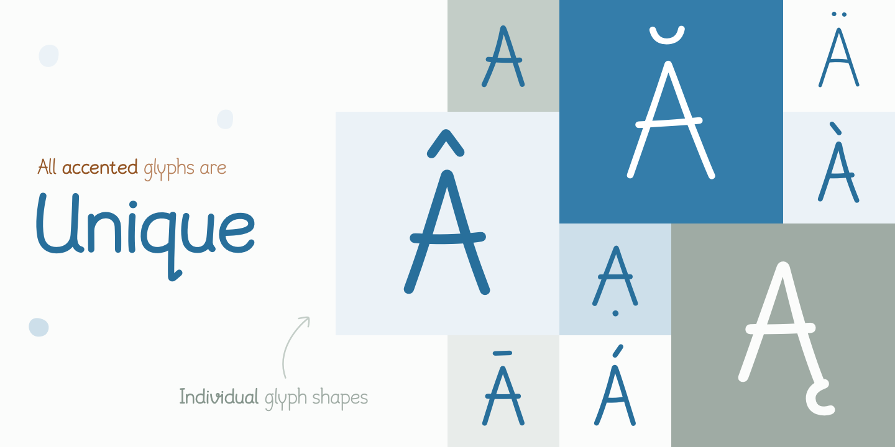
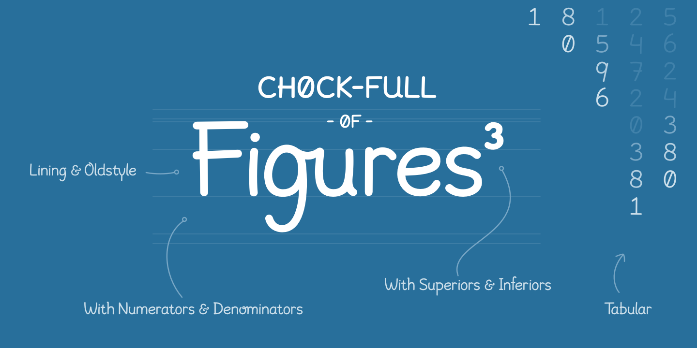
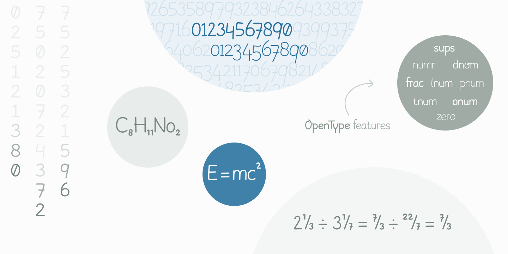